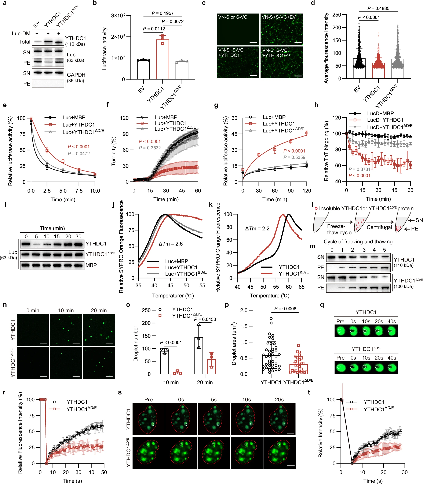
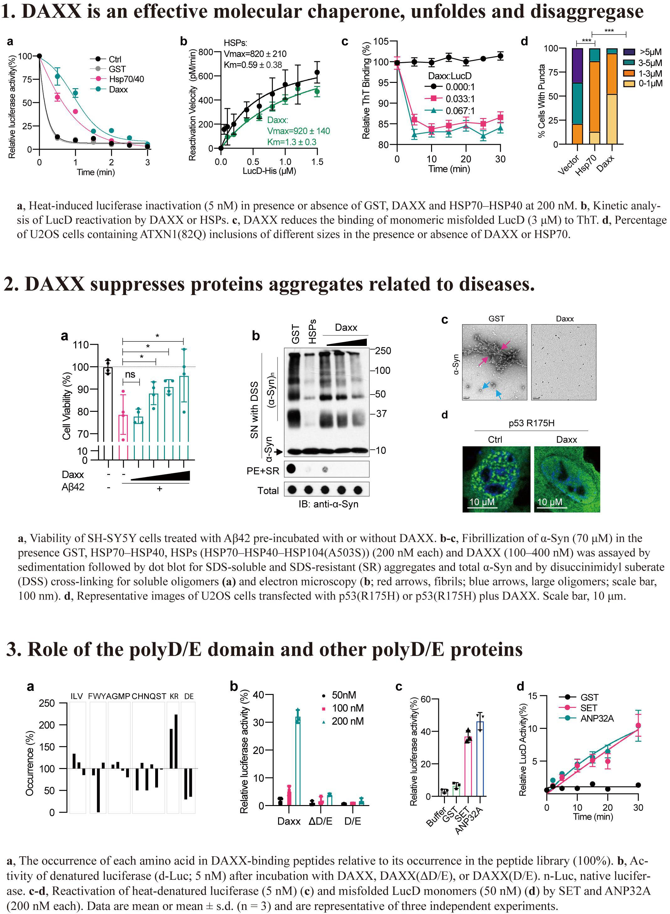

Research Focus
Mechanisms of protein quality control in health and disease.
Research Directions
Our current research directions include:
- Non-canonical protein quality control systems in protein folding and cellular homeostasis
- Regulatory roles and molecular mechanisms of protein quality control in membraneless organelles and cellular homeostasis
- Protein quality control in the prevention and treatment of cancer and neurodegenerative diseases
YTHDC1 functions as a molecular chaperone to suppress ALS-linked hnRNPA1 mutants from aggregation
Proteostasis failure drives multiple neurodegenerative disorders (NDs), and ATP-independent chaperone pathways that support neuronal proteostasis remain poorly defined. Here, we identify the N6-methyladenosine (m6A)-binding protein YTHDC1 as an ATP-independent molecular chaperone, whose activity is mediated by a highly acidic polyaspartate/glutamate (polyD/E) segment. YTHDC1 prevents protein misfolding and aggregation, unfolds kinetically trapped substrates, and resolubilizes pre-formed aggregates. Deletion of the polyD/E segment abolishes these activities, whereas aromatic-cage mutants retain chaperone activity, demonstrating independence from m6A recognition. We identify the amyotrophic lateral sclerosis (ALS)-associated RNA-binding protein hnRNPA1 as a YTHDC1 client. YTHDC1 maintains liquid-like hnRNPA1 condensates, delays fibrillization of disease-associated mutants, and limits stress-granule sequestration, while mitigating mutant hnRNPA1-induced neurite growth defects in primary neurons. These findings define a proteostatic function of YTHDC1 and highlight its chaperone activity as a potential target for mitigating protein aggregation in ALS-related NDs.

DAXX represents a new type of protein-folding enabler
Protein quality control systems are crucial for cellular function and organismal health. At present, most known protein quality control systems are multicomponent machineries that operate via ATP-regulated interactions with non-native proteins to prevent aggregation and promote folding, and few systems that can broadly enable protein folding by a different mechanism have been identified. Moreover, proteins that contain the extensively charged poly-Asp/Glu (polyD/E) region are common in eukaryotic proteomes, but their biochemical activities remain undefined. Here we show that DAXX, a polyD/E protein that has been implicated in diverse cellular processes, possesses several protein-folding activities. DAXX prevents aggregation, solubilizes pre-existing aggregates and unfolds misfolded species of model substrates and neurodegeneration-associated proteins. Notably, DAXX effectively prevents and reverses aggregation of its in vivo-validated client proteins, the tumour suppressor p53 and its principal antagonist MDM2. DAXX can also restore native conformation and function to tumour-associated, aggregation-prone p53 mutants, reducing their oncogenic properties. These DAXX activities are ATP-independent and instead rely on the polyD/E region. Other polyD/E proteins, including ANP32A and SET, can also function as stand-alone, ATP-independent molecular chaperones, disaggregases and unfoldases. Thus, polyD/E proteins probably constitute a multifunctional protein quality control system that operates via a distinctive mechanism.
